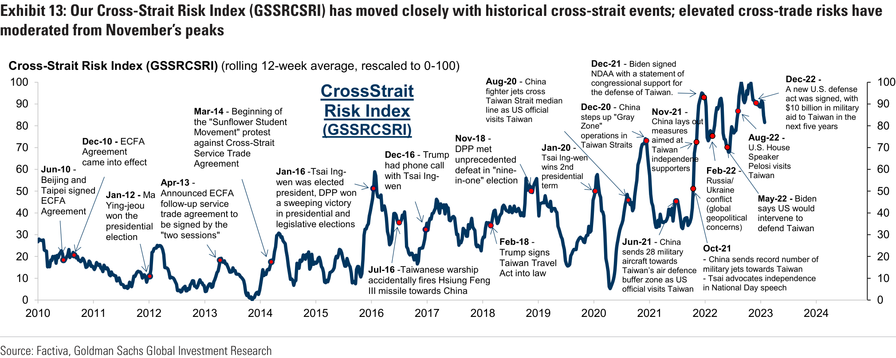
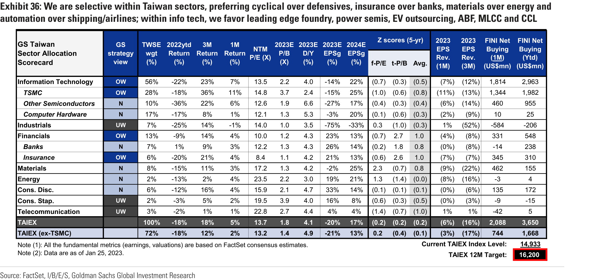

Asia-Pacific Portfolio Strategy
Taiwan: Upgrade to marketweight; position for a cyclical recovery
With a northward shift in our regional allocation for 2023, we also upgrade Taiwan to Marketweight , due to (1) positive trade exposure to China’s reopening, (2) high exposure to global and US growth, where recession risks appear to be falling, (3) a potential return of foreign flows on peaking US rates and a weaker dollar, (4) still elevated but moderating China geopolitical risks, and (5) a strong tech cycle recovery in 2H, despite still challenging near-term earnings outlook and subdued domestic growth in 2023/24. We forecast a 16,200 TAIEX target by end-2023 (up from 14,700), implying 8% price return, riding on forward earnings recovery.
Performance: Taiwan equities had a strong start (+8%) in 2023 led by semis & fins after the worst performing year since the GFC (down 25%/32% in LOC/USD).
Macro: China reopening to boost regional growth, benefiting exporters but direct net impact to Taiwan macro could be less due to higher oil; DM growth to improve with moderating recession risks; Policy rates to peak in May but the Fed cuts may not happen until 2Q24; Below-potential Taiwan’s economic growth, as exports and fixed investment remain weak in 1H; Cross-strait risk moderated from elevated levels while the market appears to have fairly priced the uncertainty; Municipal election results (KMT’s victory) tended to support Taiwan equities in next 12 months.
Valuations: Fair fPE valuations (13.5X, 10-yr mean); attractive tP/B (2.0X on 16% ROE) relative to South Asian markets; favorable (4%) dividend yields.
Earnings: Near-term earnings remain challenged due to weak end-demand; forecast -20%/+25% growth in 2023/24 (-6pp/+11pp vs. prior) with a stronger 2H recovery.
Flows & positioning: A strong return of foreign flows since Nov (+US$8.5bn) after record outflows (-US$80bn) in 3 years which pushed the foreign ownership of tech/financials to the low end of historical ranges; Global/GEM funds are heavily underweight Taiwan (-150bp/-290bp); Domestic retail activities moderated but are still strong among the region; Government flows provided sentimental support.
Selective sector preference: Prefer cyclical over defensives, insurance over banks, materials over energy, automation over shipping/airlines, and select tech businesses (leading edge foundry, power semis, EV outsourcing, ABF, MLCC and CCL).
Implementation ideas: (1) China reopening beneficiaries, (2) Growth recovery with GARP, (3) GS Buy-rated ideas in preferred sectors, and (4) Return of foreign flows.
====================================================================================================
Asia-Pacific Portfolio Strategy
Table of Contents
Performance recap: Worst market in 2022 but a good start in 2023
Macro: Incrementally positive although near-term challenges remain
Valuations: Appear fair considering different metrics
Earnings: Remain challenging before a 2H recovery
Flows: Foreign investors to return after record years of selling
Returns & Allocations: Upgrade to marketweight in the region; cyclical-driven returns; selective on sectors 13
Implementation Ideas
====================================================================================================
Exhibit 1: Taiwan equities experienced the worst performing years after the GFC, declining 25% in 2022 (-32% in USD)
Exhibit 2: Taiwan lagged the regional MXAPJ index by 15% in 2022
Exhibit 3: Taiwan was the worst performing Asian market in 2022,
Exhibit 4: Semis, industrials (cyclicals) and insurance (due to Covid
====================================================================================================
Exhibit 5: Within APxJ economies, Taiwan and Korea were most exposed to mainland China lockdown-related disruptions
Exhibit 6: China’s reopening may have positive regional
====================================================================================================
Exhibit 7: Our economists recently raised their forecasts and expect economic growth to improve from 2Q23
Exhibit 8: Taiwan‘s equity index has the highest foreign revenue
====================================================================================================
Exhibit 9: We expect the Fed to go on hold in May after 3 more 25bp hikes
Exhibit 10: Our economists expect Taiwan’s inflation to moderate to

Exhibit 11: We expect below-potential growth for Taiwan in 2023/24
Exhibit 12: Taiwan exports sharply declined in 4Q22 and are
====================================================================================================
Exhibit 13: Our Cross-Strait Risk Index (GSSRCSRI) has moved closely with historical cross-strait events; elevated cross-trade risks have moderated from November’s peaks
Exhibit 14: Escalating cross-strait tensions have tended to exert a
Exhibit 15: The market appears to have fairly priced the cross-strait
====================================================================================================
Exhibit 16: KMT continued to lead in local election vote by a wide margin in 2022
Exhibit 17: The implications of local election results for the
Exhibit 18: The Taiwan equity market has historically performed
Exhibit 19: ... especially over a longer (12 months) rather than a
====================================================================================================
Exhibit 20: Taiwan PE valuations have recovered to an average level and traded similar to MXAPJ
Exhibit 21: On price-to-book valuations, Taiwan is being traded
Exhibit 23: The shrinking equity/bond yield gap suggests that
Exhibit 22: The 4.1% trailing dividend yields of Taiwan (vs. MXAPJ
====================================================================================================
Exhibit 24: MSCI Taiwan’s EPS has been revised down 20% over the past year, with earnings downgrade across most sectors
Exhibit 25: Our earnings revision leading indicator (ERLI) projects
Exhibit 26: We expect 0% EPS CAGR (+6% ex-industrials) for MSCI
Exhibit 27: Financials, Commodities and Tech H/W will likely lead
====================================================================================================
Exhibit 28: Foreign investors started to net buy Taiwan equities, after 3 record years of strong selling
Exhibit 29: Foreign ownership for both Tech and non-Tech sectors is
Exhibit 30: Global and AEJ focused mutual funds are heavily
Exhibit 31: EM and AEJ funds have turned underweight Info Tech
Exhibit 32: Domestic retail investors have been the major net
Exhibit 33: Retail activity sentiment remains high in Taiwan,
Exhibit 34: Taiwan National Stabilization Fund has protected the downside of Taiwan market
====================================================================================================
Exhibit 35: We expect 8% price return for Taiwan by end-2023 on earnings recovery
Exhibit 36: We are selective within Taiwan sectors, preferring cyclical over defensives, insurance over banks, materials over energy and
====================================================================================================
Exhibit 37: The Korea smartphone and memory cycle may turn earlier and stronger than the Apple and foundry cycle Projected bottom/upturn from bottom by application and component
Exhibit 38: In historical China specific rallies, Taiwan mostly underperformed Korea and other regional peers
====================================================================================================
Exhibit 39: China Reopening Beneficiaries: Stocks with high China sales exposure and reasonable valuations, which may see further room to run on continued China policy easing and activity normalization
====================================================================================================
Exhibit 40: Growth Recovery with GARP: Stocks with improving and high earnings growth in 2024E and reasonable valuations, which may see stronger recovery into 2H
Exhibit 41: GS Buy rated ideas in preferred sectors and businesses
====================================================================================================
Exhibit 42: Return of Foreign Flows: Previous out-of-foreign-favorite stocks may benefit if the foreign inflow trend continues
====================================================================================================